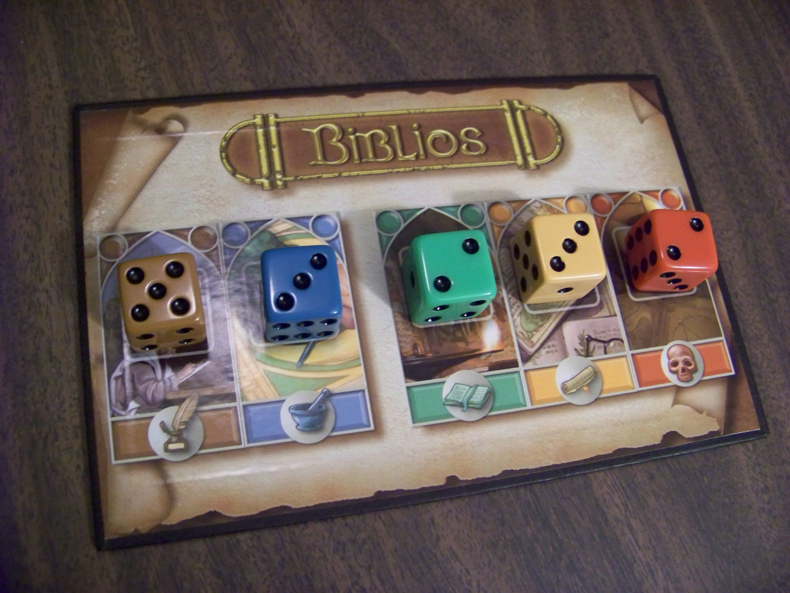
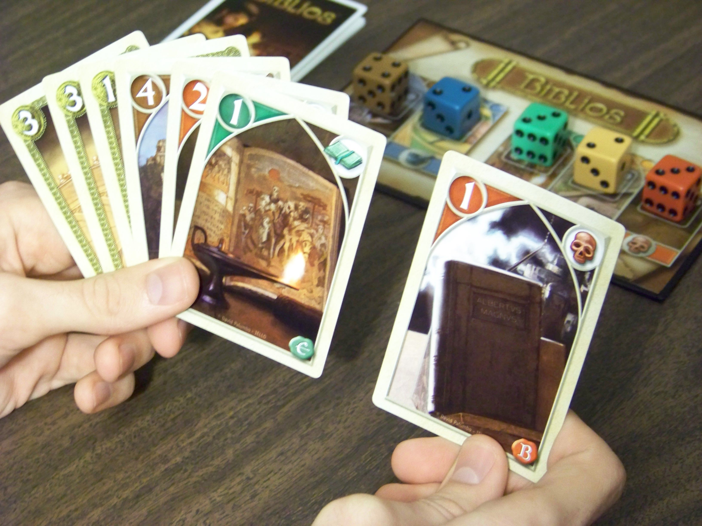

Board Game Achievements

A random list of extra challenges for some of my favorite games.
11/25/2017
Is there anything cooler than book collecting?
Posted on 12/2/2017 by Tim Rice
Biblios is one of those games that is exceptionally interesting to play, but convincing new players of that is no easy task.
"Want to play this game Biblios?"
"What’s the theme?"
"You are an abbot at the head of a monastery who is building a library collection. You’ll get to collect holy books, hire copyists, work on decorative lettering, and persuade bishops!"
"Uhh...OK...What do you do in the game?"
"You collect different colors of cards. Then you have an auction where you bid for different colors of cards."
"....."
Despite the unimpressive-sounding theme and mechanics, Biblios turns out to be a clever and layered card game. It also has a surprising amount of staying power, especially for a filler.
In the box you’ll find a small game board, 5 colored dice, and a deck of 87 cards.
To set up, all 5 dice are placed on the game board with the threes facing up, and the deck is shuffled. Some number of random cards are then removed from the deck (depending on the number of players).
On your turn, you draw a number of cards (equal to the number of players plus one) from the deck, one by one. Each time you draw, you choose whether to give the card to yourself, give it to another player, or put it in the auction pile for later. Each turn you must give one card to each player (including yourself), and the auction pile.
Players continue taking turns until the deck runs out, and then each player will have a hand of several cards. There are three different kinds of cards:
After all the cards have been distributed, the auction phase starts. The active player flips a card from the auction pile, which all players then get a chance to bid on. The next player chooses to either place a bid or pass, and subsequent players can either bid higher or pass until someone wins the card, pays their bid, and adds it to their hand.
If the card being auctioned is a colored card or a church card, players bid gold (from gold cards). If the card being auctioned is a gold card, players bid a number of cards (I’ll discard two cards from my hand for that gold card).
Once all the cards have been auctioned off, players add up their numbers for each color. Whoever has the most of each color wins the corresponding die, and the victory points that go along with it. The player with the most victory points after all the colors have been resolved wins.
When it comes to casual card games, Biblios stands out as one that offers a solid helping of depth as well as some refreshing mechanics. A lot of small games lose their luster after a few plays, but this one gives veteran players enough to think about without sacrificing much ease of play for beginners.
In the first part of the game, every turn offers interesting and multifaceted decisions. Each draw, there are a surprising number of aspects to consider:
These considerations only ramp up as the game progresses to the auction phase, which is where the game really shines. At this point, all players have an idea of the colors they need to win to have a chance at the final prize, and when those colors overlap, it creates that iconic and palpable tension which makes auctions so engaging.
I’m impressed by how it provides a complete experience with organic progression in such a quick timeframe and with so few components. The mechanism where you trade gold for colors and you trade cards for gold during the auction is brilliant; it makes it so that every card has value until the very end, and players get to choose their own destiny rather than relying solely on the luck of the draw.
As with any card game, of course luck does play a role in determining the winner, but a great deal of that is mitigated by player decisions. Even though players can’t control what they draw, where those cards end up is almost entirely up to the players. Therefore good play is definitely rewarded.
The game is quite easy to learn and teach, although it can be difficult for new players to grasp which cards are good and bad before playing through a round. Not all the colors have the same values on the cards, for example, so a ‘2’ in one color could be great while a ‘2’ in another color is not so great. That is probably the only finicky part about it though, and a lot of casual players won’t even notice or care (gamers will though).
It is also refreshingly interactive. From beginning to end, I am constantly paying attention to what everyone else is doing. If they give me a blue card, I’m thinking they’re probably not going for blue, unless they had no other choice? If they increase the value of the green dice, maybe I should start bidding more for greens? But what if they have more than me? How badly do they want this card? Should I bid even if I don’t want it so I can drain their money for later?
Needless to say at this point, the design has legs. It’s an interactive mind game that feels like a casual card game, and it balances those two aspects brilliantly.
I don’t have any complaints about the visual appeal of the game. The art on the cards and cover is pretty good, and all the components are sturdy. I especially like the glossy magnetic box that looks like a book, that’s a great touch.
I like the theme of building extravagant religious library collections even though it’s a bit unconventional. It’s one of those mechanism-driven games where the theme could really be anything, so it’s cool that they chose something unique. The theme doesn’t really add much besides aesthetics, but I’d argue that it doesn’t matter much for a short casual game like this.
Biblios has been one of my most played games this year, and I’m still not bored of it. It’s the perfect filler because I can pull it out with any group, it’s easy to get started, and it’s an engaging puzzle every time. If you’re looking for a quick and unique card game that you’ll be able to enjoy for a long time to come, look no further.


Thanks for reading!